SOLICITUD DE INGRESO, LOS SANTOS FIRE
Las solicitudes se aceptarán en línea únicamente desde el MIÉRCOLES 9 DE FEBRERO DE 2022 HASTA EL DOMINGO 13 DE FEBRERO DE 2022.
Los candidatos deben registrarse y tomar el FCA durante el período de prueba.
EVALUACIÓN DE CANDIDATO PARA BOMBERO (FCA)
La FCA o Evaluación de Candidatos a Bomberos, es una serie de pruebas basadas en computadora que consta de dos partes; una evaluación multimedia y un componente de autodescripción. En la parte multimedia, los candidatos responden a señales de audio y video en la computadora. En el componente de autodescripción, los candidatos se definen a sí mismos respondiendo a elementos biográficos, situacionales y de actitud laboral.
Para cumplir con el requisito de la FCA, debe registrarse y tomar la FCA durante el período de prueba. El registro FCA comenzará el MIÉRCOLES 09 DE FEBRERO DE 2022 HASTA EL DOMINGO 13 DE FEBRERO DE 2022.
Se requiere lograr un puntaje de aprobación en el FCA para ser considerado para la siguiente fase del proceso de selección que será la entrevista, asignación de estación y prácticas.
REQUISITOS
Durante el proceso de selección se quiere dejar claro a la ciudadanía que el departamento de bomberos una vez hayas sido seleccionado por el programa FCA, deberás asistir a las prácticas que se harán los días MARTES DESDE LAS 15:00PM EN ADELANTE O JUEVES DESDE LAS 20:00PM EN ADELANTE (HORARIO ARGENTINA) en AMBOS DÍAS serán las mismas prácticas, si no puedes acudir el MARTES puedes acudir el JUEVES, por eso hay diferencia de horario en ambos días. Si no tienes disponibilidad horaria en estas dos opciones, no hagas el proceso de selección.
Tener su documentación y licencia de conducir al día.
Tener de 18 a 35 años de edad.
No poseer antecedentes penales.
Tener certificado de primeros auxilios al día.

APLICA